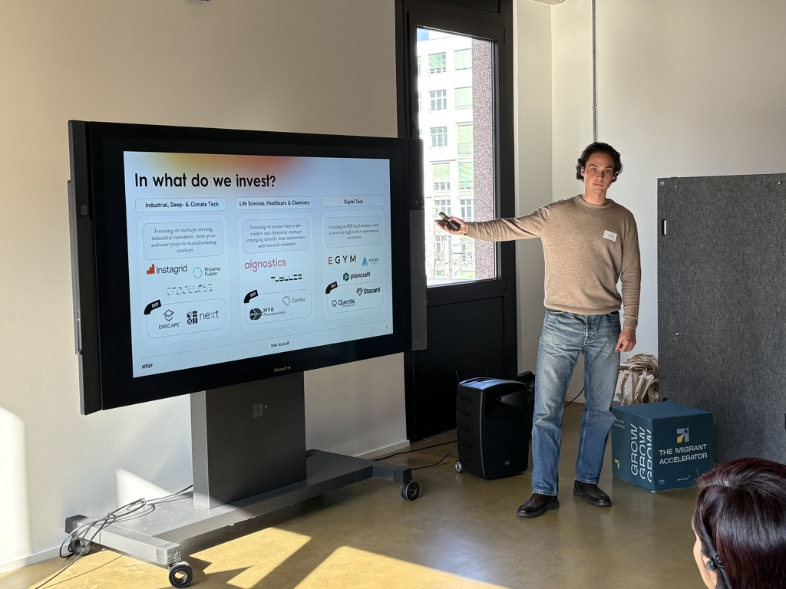
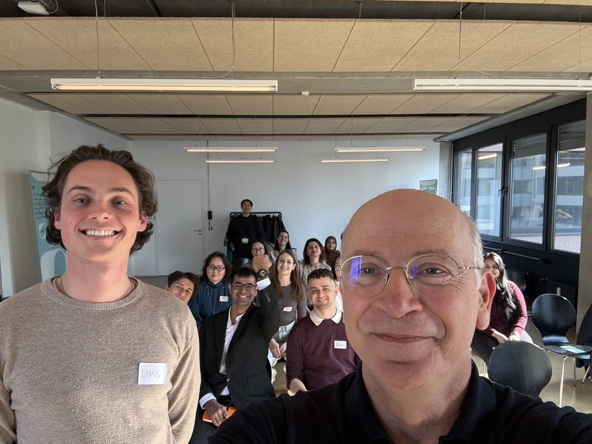

Latest
Events, podcast episodes, articles and appearances — most recent first.
Panel discussion at Institut français München on the foundations, uses, ethical issues and future of AI in Europe.
View announcement →Founding engineer of MobilEye & advisor to the Israeli Government on AI ethics — on why moral frameworks matter for AI entrepreneurs.
Listen on Spotify →

Expert session at the Stuttgart Migrant Accelerator Kickoff — empowering migrant founders to start up in Germany.
More info →